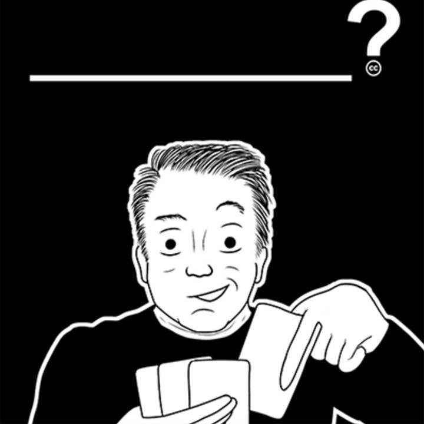

2015-12-11
獨樂樂不如眾樂樂！遊戲設計師總是希望自己可以與他人分享玩遊戲時的快樂，而且他們也知道有越多人參與遊戲時就會越好玩，創用CC授權方式正好能滿足遊戲設計師的需求！
Cards Against Humanity
Cards Against Humanity是最知名也最成功的開放授權紙牌類遊戲。這款遊戲很簡單，卡片分成白色與黑色，一個玩家問黑卡中的問題，其他人回答白卡中的答案，對應起來會變成非常好笑又奇怪的句子，很適合派對中眾多朋友一起玩。

Luke Surl以CC0授權釋出，圖中為Max Temkin。
這個遊戲由Max Temkin和高中同學Dillon、Daniel Dranove、Eli Halpern、Ben Hantoot、David Munk、David Pinsof、Eliot Weinstein共同設計，2008年時先在網路上免費分享，2010年則在Kickstarter募資製作印刷版。線上免費版採用創用CC 姓名標示—非商業性—相同方式分享的授權方式，目前已經被下載了幾百萬次；印刷版則價值25美金，曾經是Amazon排名第一的遊戲。
由於他們採用創用CC授權，現在這個遊戲有很多種語言版本，並因應不同國家的文化民情產生不同的搞笑答案，這是Max Temkin始料未及的。他認為這是一個很好的發展方向，這個遊戲本來就是要讓大家聚在一起，在階級、種族、權利等敏感問題上開放心胸的對話。
另外，他們採用創用CC授權後可以減少處理著作權問題的時間，專心投入於遊戲的改善。而且，他們沒有做任何廣告，就可以靠著眾人口耳相傳大幅提升遊戲知名度，成為廣為人知的遊戲。
Max說：「這個遊戲是關於說笑話及逗人笑得，我們想要讓人們感受到他們是共同說笑話的參與者，這就是遊戲的喜劇精神。」、「對我們而言，創用CC是分享遊戲的洽當方式，讓人們可以使用它並將之客製化，在無需恐懼法律問題的情況下感受到自己擁有這個遊戲。」
Phylo
Phylo同樣是開放授權的紙牌類遊戲，設計師注意到小孩子對於神奇寶貝裡的各種生物聊若指掌，卻不太熟悉真正大自然裡的各種動植物，因此仿造神奇寶貝設計了這個用以進行科學教育的遊戲，希望讓孩子能從遊戲中學到生物多樣性的概念。
遊戲卡的圖片多半都以創用CC姓名標示—非商業性—禁止改作授權釋出，他們希望仍能保留作者足夠的著作權，然而若是合作的作者願意更為開放的處置他的作品，他們就會採用比較寬鬆的授權條款。不過，他們以創用CC姓名標示—相同方式的授權方式來釋出遊戲規則，以利他人能自行更改遊戲規則。
也有一些遊戲設計師採用創用CC的授權條款，是因為他們希望遊戲的寓意能傳播得更快，讓更多人藉由玩這些遊戲接收到他們想傳遞的訊息。
Data Dealer是一個有得獎過的線上遊戲。在這個遊戲中，你會扮演蒐集、追蹤他人個人資料及侵犯他人資料隱私的人。Data Dealer看似嚴肅，但是遊戲過程中不會出現有礙娛樂度的說教橋段，只是會在扮演過程中讓人開始反思自己的資料是不是也在他人掌控之內。
這個遊戲來自一個非營利計畫，希望藉此喚醒眾人對於個人資料與數位隱私議題之注意力，避免在無意識地做出一些行為後才發現失去了個人資料。他們在發展遊戲前做了許多研究，甚至在TED上進行演講，講題是How to gamify personal data business。這個遊戲以創用CC 姓名標示—相同方式分享授權釋出。
Notable Women in Computing Card Deck
杜克大學與Everwise在計劃支持下，多年來在維基百科上撰寫資工界著名女性條目，他們後來合作設計了Notable Women in Computing Card Deck的撲克牌，讓人邊打牌邊可以認識幾位資工界的著名女性。這些女性來自不同國家，有不同的抱負和能力，有人是ACM或IEE的榮譽會員，有人獲得過圖靈獎。
撲克牌上的圖像有的來自公眾領域，有的是尋求他人授權，文字則由團隊成員提供。為了讓更多人能認識這些優秀女性，他們以創用CC 姓名標示—非商業性—相同方式授權分享這個撲克牌，在家裡下載檔案印製，只需花費45分鐘與18元美金。
除了以上介紹的五種採用創用CC授權分享的遊戲，說故事遊戲平台Bhaloidam以及角色扮演的線上遊戲One Shot也都採取創用CC 姓名標示—相同方式分享的授權方式。要是感興趣，在Kickstarter募資平台上還有其他採用創用CC授權的遊戲，可以再去挖寶喔！
參考資料